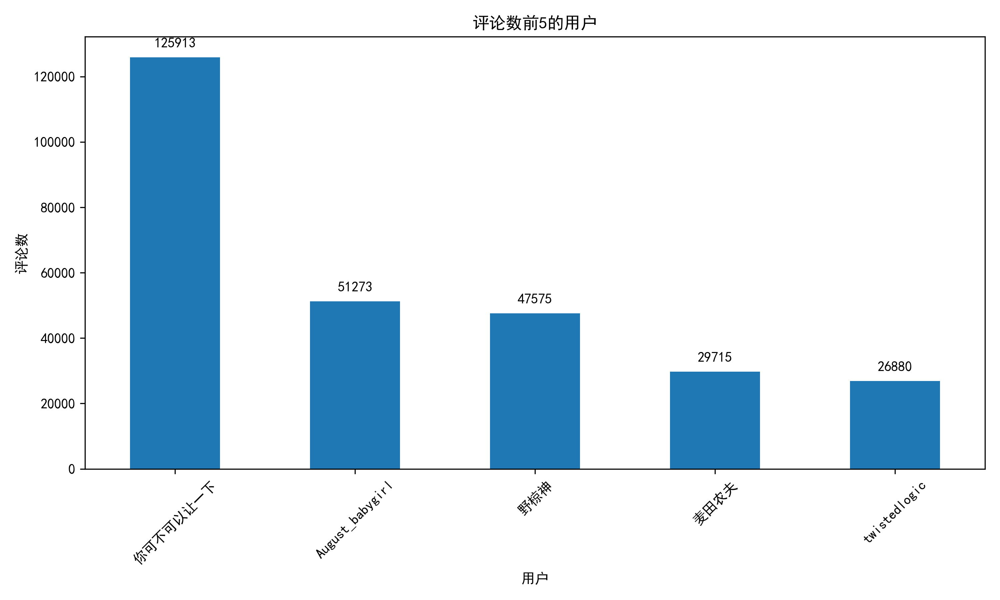
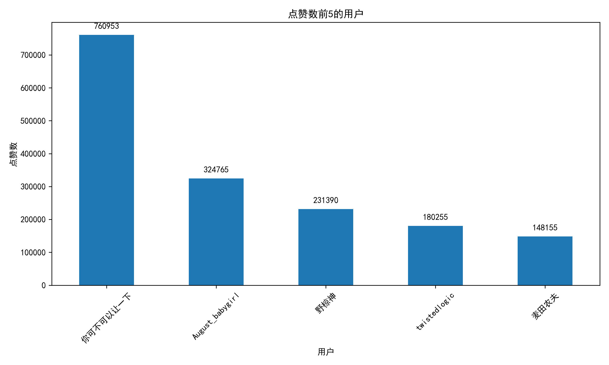
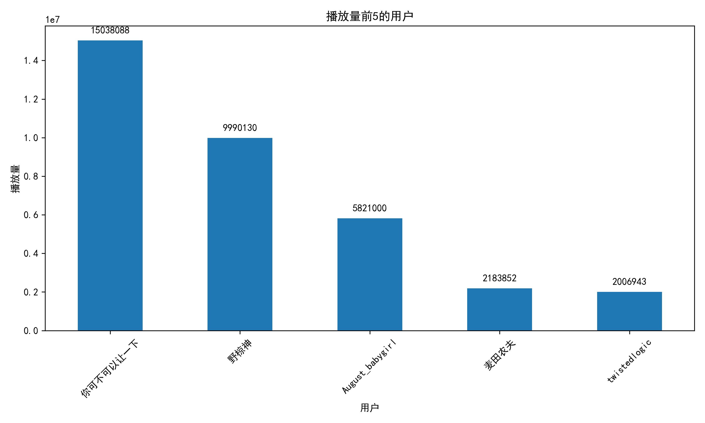
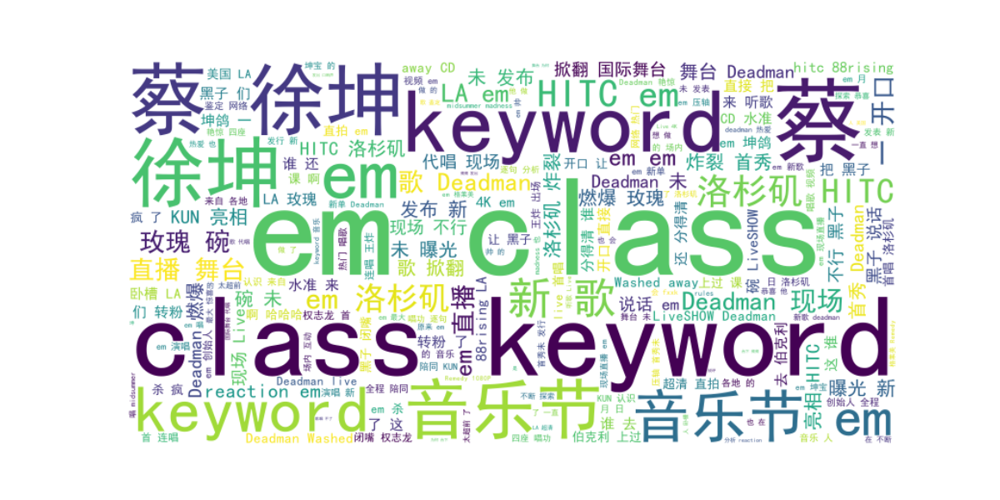
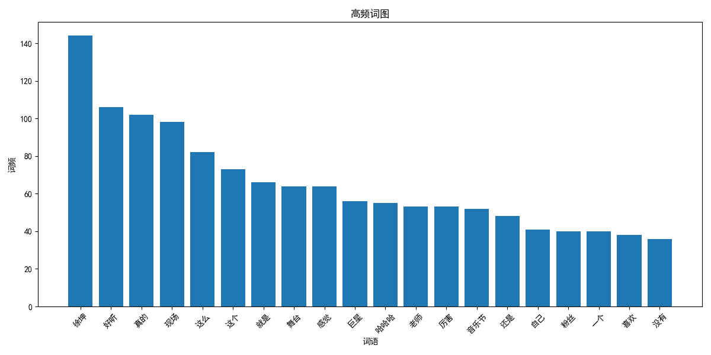
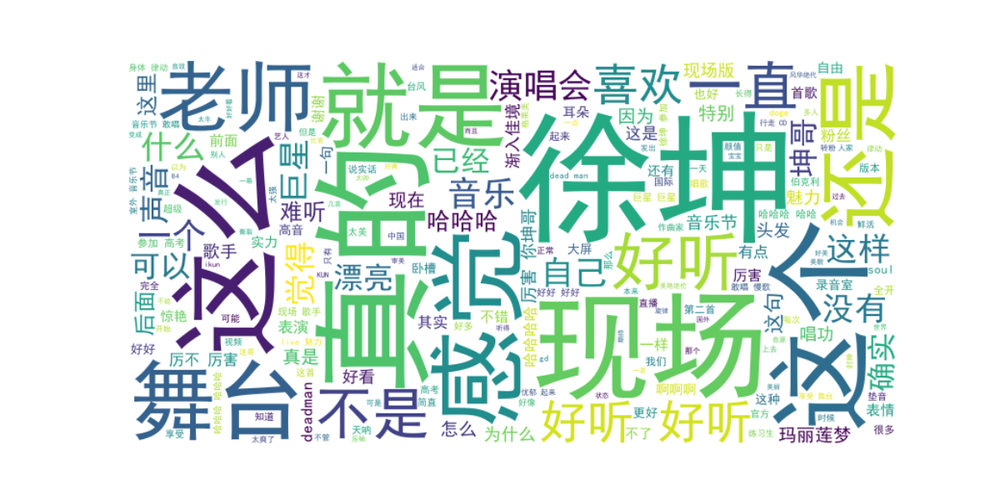

评论活跃度分析
展示了bilibil上评论数排名前5的用户，反映了用户参与内容讨论的积极性。这有助于识别核心互动用户群体。

内容喜好度分析
显示了点赞数最多的5位用户，体现了他们对bilibili以及创作者内容的喜爱程度。高点赞用户通常是内容质量的忠实反馈者。

内容传播度分析
呈现了播放量最高的5位用户内容，反映了内容的传播能力和受众覆盖面。播放量高的内容通常具有更广泛的吸引力。

内容主题分析
基于用户生成内容生成的词云，展示了关键词分布。较大的字体表示出现频率更高的主题。

关键词频率分析
详细展示了内容中出现频率最高的词汇及其出现次数。这有助于挖掘用户关注的重点内容和趋势。

用户情感分析
通过文本分析生成的情感词云，展示了用户讨论中的情感倾向。